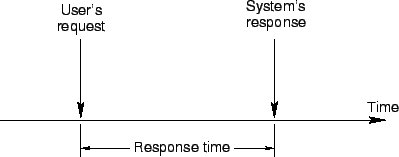
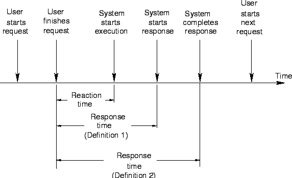

Next: อัตราความสำเร็จ
Up: ตัววัดประสิทธิภาพพื้นฐาน
Previous: ตัววัดประสิทธิภาพพื้นฐาน
Contents
Index
เวลาตอบสนอง
(Response Time) นิยามเป็นช่วงเวลาระหว่างเวลาที่ผู้ใช้เรียกบริการถึงเวลาที่ระบบเริ่มตอบสนอง ดังแสดงในรูป 2.2 โดยนิยามดังกล่าว บางครั้งไม่ครอบคลุมโดยละเอียด เนื่องจากขณะที่ผู้ใช้เรียกบริการ มีเวลาที่ใช้ไปในการส่งบริการ เช่น เวลาที่พิมพ์คำสั่ง และขณะที่ระบบตอบสนอง ระบบต้องใช้เวลาช่วงหนึ่งในการแสดงผล ดังแสดงในรูป 2.3
เวลาตอบสนองสามารถนิยามได้อีก 2 อย่าง คือ นิยามช่วงเวลาระหว่างที่ผู้ใช้บริการส่งคำร้องขอเสร็จสิ้น ถึงเวลาที่ระบบเริ่มตอบสนอง อีกนิยามหนึ่ง คือนิยามว่าเป็น ช่วงเวลาระหว่างผู้ใช้บริการส่งคำร้องขอเสร็จสิ้น ถึงเวลาที่ระบบตอบสนองเสร็จสิ้น เราสามารถยอมรับนิยามทั้งสอง ตราบเท่าที่นิยามถูกอธิบาย และระบุอย่างชัดแจ้ง ในกรณีที่ระบบใช้เวลาในการตอบสนองยาวนาน นิยามที่สองอาจจะเหมาะสมกว่า
Figure 2.2:
เวลาตอบสนองนิยาม 1
|

|
Figure 2.3:
เวลาตอบสนองนิยาม 2
|

|
ในระบบ BATCH ที่มีการส่งงานแบบเป็นกลุ่มก้อน การตอบสนองวัดเป็นช่วงเวลา ในการทำงาน (Turnaround Time) ที่วัดเป็นช่วงเวลาระหว่างการส่งงาน ถึงผลลัพธ์ออกทาง เอาท์พุต (Output)
เวลาระหว่างการส่งคำขอบริการถึงเวลาเริ่มประมวลผล โดยระบบเรียกว่าเวลาปฏิกิริยา (Reaction Time) ในการที่จะวัดเวลาปฏิกิริยาเราจะต้องสามารถตรวจสอบการทำงานภายในของระบบ เนื่องจากโดยส่วนใหญ่เราจะไม่สามารถตรวจสอบเวลาเริ่มของการประมวลผลได้จากภายนอก ตัวอย่างเช่น ระบบคอมพิวเตอร์ที่ใช้งานร่วมกันช่วงเวลาระหว่างการพิมพ์แป้นครั้งสุดท้ายของผู้ใช้ ถึง เวลาที่คำสั่งของผู้ใช้ได้รับการประมวลผลครั้งแรกเรียกว่า เวลาปฏิกิริยา (Reaction Time)
Vara Varavithya
2002-03-09